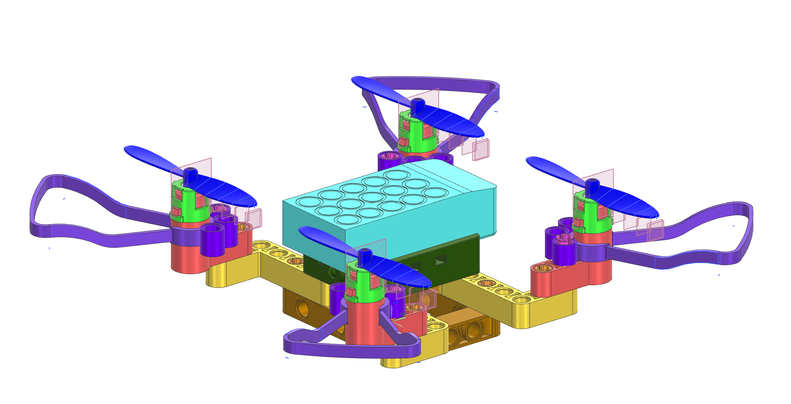

Hardware
Drone CAD & Structural Analysis
Full quadrotor drone CAD in Siemens NX with FEA and multi-body dynamics for structural validation.
Overview
Designed a quadrotor drone frame and validated structural performance with FEA and multi-body dynamics.
Approach
Used Siemens NX for CAD and ANSYS for FEA to optimize materials and joint geometries.
Results
Optimized frame for durability and reduced weight while maintaining stiffness and dynamic stability.